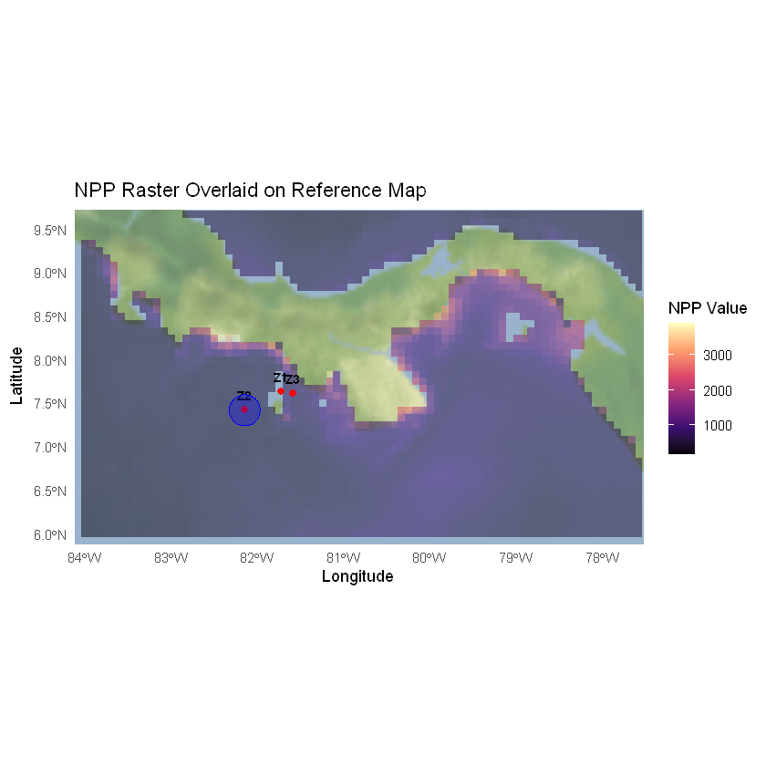

R.versionrm(list= ls())library(tidyr)library(dplyr)library(ggplot2)library(ncdf4) # for *.nc fileslibrary(raster)library(ggmap)library(viridis)
_
platform x86_64-w64-mingw32
arch x86_64
os mingw32
crt ucrt
system x86_64, mingw32
status
major 4
minor 4.1
year 2024
month 06
day 14
svn rev 86737
language R
version.string R version 4.4.1 (2024-06-14 ucrt)
nickname Race for Your Life
Warning message:
"package 'tidyr' was built under R version 4.4.3"
Warning message:
"package 'dplyr' was built under R version 4.4.3"
Attaching package: 'dplyr'
The following objects are masked from 'package:stats':
filter, lag
The following objects are masked from 'package:base':
intersect, setdiff, setequal, union
Warning message:
"package 'ggplot2' was built under R version 4.4.3"
Warning message:
"package 'raster' was built under R version 4.4.3"
Loading required package: sp
Warning message:
"package 'sp' was built under R version 4.4.3"
Attaching package: 'raster'
The following object is masked from 'package:dplyr':
select
Warning message:
"package 'ggmap' was built under R version 4.4.3"
ℹ Google's Terms of Service: <https://mapsplatform.google.com>
Stadia Maps' Terms of Service: <https://stadiamaps.com/terms-of-service/>
OpenStreetMap's Tile Usage Policy: <https://operations.osmfoundation.org/policies/tiles/>
ℹ Please cite ggmap if you use it! Use `citation("ggmap")` for details.
Warning message:
"package 'viridis' was built under R version 4.4.3"
Loading required package: viridisLite
Warning message:
"package 'viridisLite' was built under R version 4.4.3"
In this document and script, various data sources offering worldwide remote-sensing data were queried to retrieve physical and biogeochemical variables with potential predictive power for biodiversity.
Check geographic coordinates and identify potential problems. It may be useful to plot and label the mean site_code of stationary monitoring stations (e.g., temporal sampling in the same bay). In addition, plot the original geographic coordinates, and connect with edges sites under the same site label (all coordinates under the same site label should be close to each other).
library(ggmap)# Average coordinates per site centroids <- sample_data %>% group_by(site_code) %>% summarise(lon = mean(lon), lat=mean(lat))# Unique coordinates per sitetmp2 <- sample_data %>% group_by(site_code) %>% distinct(lon, lat)# Set bounding box # bbox <- make_bbox(centroids$lon, centroids$lat, f = c(0.3,0.3)) # only works with a range of coordinatesbbox <-round( make_bbox(mean(centroids$lon) + c(-2, 4), mean(centroids$lat) + c(-1.5, 2)) , 2)# bbox <- make_bbox(extent2$lon, extent2$lat) cat("Bounding box: ", bbox, "\n")register_stadiamaps(key ="f4aaa648-6137-4e34-a850-46c9821d7a6a")map<- ggmap(get_stadiamap(bbox = bbox, zoom =7, maptype ="stamen_terrain_background"))
Once the map area is defined, it is possible to query remote sensing data sources to retrieve physical and biogeochemical variables. The bounding box of the map area can be used to query data from different sources.
The bounding box coordinates are: - Left (min longitude):r bbox[1] - Bottom (min latitude):r bbox[2] - Right (max longitude):r bbox[3] - Top (max latitude):r bbox[4]
Can also r dput(bbox) to print the bounding box coordinates.
dput(bbox)
c(left = -84.12, bottom = 5.88, right = -77.52, top = 9.73)
Copernicus Marine presents one of the largest data inventories of high-quality ocean data. The Copernicus Marine Service (or Copernicus Marine Environment Monitoring Service) is the marine component of the Copernicus Programme of the European Union. It provides free, regular and systematic authoritative information on the state of the Blue (physical), White (sea ice) and Green (biogeochemical) ocean, on a global and regional scale. It is funded by the European Commission (EC) and implemented by Mercator Ocean International https://data.marine.copernicus.eu/products.
There are a few options to download the data:
Downloaded using spatial, temporal, depth, etc., filters directly from the webpage https://data.marine.copernicus.eu/products. Then, the files can be further processed here.
There is a Phython API called copernicusmarine that can be used to mass-download data. Follows a Python script to download time series in bulk (adapted from Copernicus_data_download.py which I stored on Github).
Some of the libraries were installed in a virtual environment for this test project. Therefore, before running this jupyter notebook, activate the virtual environment like this:
in bash, navigate to the project’s folder where the .venv is and run
.venv.ps1
Once the virtual environment is activated, run the jupyter notebook
and select the right kernel called “Python (Copernicus Downloader)”
In case the latter isn’t registered, register a new jupyter kernel (this might be done already). pip install ipykernel python -m ipykernel install –user –name=coiba_env –display-name “Python (Copernicus Downloader)”
#################################### Mass-download Copernicus data sets for time series # Cristian Correa, March 2025.# Requires Phython >3.9##################################import osos.chdir("./Copernicus_NPP/")os.getcwd()
# Clear all variables from the current environmentfor name indir():ifnot name.startswith('_'):delglobals()[name]
import sysprint(sys.executable)
C:\Users\crist\miniconda3\python.exe
import osimport copernicusmarineimport xarray as xrimport matplotlib.pyplot as pltimport cartopy.crs as ccrsimport cartopy.feature as cfeaturefrom datetime import datetime, timedelta
# User credentialsuser_ ="ccorrea"pass_ ="Galax1as"
Next, specify a dataset. Datasets can be found https://data.marine.copernicus.eu/products. Use filters to narrow down the search (e.g., by date range) > choose Product > Data access > Dateset (table) > Form (under Subset column).
Go to Automate tab > Phython API. There you will find an snippet that can be modified and used to download the desired data.
# Define date range (daily intervals)start_date = datetime(2015, 1, 26)end_date = datetime(2016, 12, 31)date_range = [start_date + timedelta(days=i) for i inrange((end_date - start_date).days +1)]
# Ensure output directory existsos.makedirs(output_dir, exist_ok=True)# Loop over each date (daily downloads)for date in date_range:# Define start and end times (one-day period) start_str = date.strftime("%Y-%m-%dT00:00:00") end_str = date.strftime("%Y-%m-%dT23:59:59")# Define output filename for this day output_filename =f"nppv_{date.strftime('%Y%m%d')}.nc" output_path = os.path.join(output_dir, output_filename)# Skip download if the file already existsif os.path.exists(output_path):print(f"File {output_filename} already exists, skipping download.")continue# Download data for this daytry: response = copernicusmarine.subset( dataset_id=dataset_id, dataset_version=dataset_version, variables=variables, minimum_longitude=longitude_bounds[0], maximum_longitude=longitude_bounds[1], minimum_latitude=latitude_bounds[0], maximum_latitude=latitude_bounds[1], start_datetime=start_str, end_datetime=end_str, coordinates_selection_method="strict-inside", minimum_depth=0, maximum_depth=10, disable_progress_bar=False, username=user_, password=pass_ )# Ensure the response contains a file pathifhasattr(response, "file_path") and os.path.exists(response.file_path): os.rename(response.file_path, output_path)print(f"Saved daily data for {start_str} as {output_filename}")else:print(f"Download failed or file not found for {start_str}")exceptExceptionas e:print(f"Error downloading data for {start_str}: {e}")
# The forlder is populated by *.nc files (one per date in the time series).# Get a description of the data set catalogue = copernicusmarine.describe(dataset_id ="cmems_mod_glo_bgc_my_0.083deg-lmtl_PT1D-i")# Filter the outputcatalogue_dict = catalogue.model_dump( exclude_none=True, exclude_unset=True, exclude={"products": {"__all__": {"datasets": True, "description": True, "keywords": True}}} )catalogue_dict["products"][0]
A time series was downloaded using the Copernicus_data_download.py script. Begin by examining one frame:
setwd("C:/Users/crist/Documents/GitHub/Copernicus_downloader_Coiba/Copernicus_downloader")rm(list= ls())library(tidyr)library(dplyr)library(ggplot2)library(ncdf4) # for *.nc fileslibrary(raster)library(ggmap)library(viridis)
Warning message:
"package 'tidyr' was built under R version 4.4.3"
Warning message:
"package 'dplyr' was built under R version 4.4.3"
Attaching package: 'dplyr'
The following objects are masked from 'package:stats':
filter, lag
The following objects are masked from 'package:base':
intersect, setdiff, setequal, union
Warning message:
"package 'ggplot2' was built under R version 4.4.3"
Warning message:
"package 'raster' was built under R version 4.4.3"
Loading required package: sp
Warning message:
"package 'sp' was built under R version 4.4.3"
Attaching package: 'raster'
The following object is masked from 'package:dplyr':
select
Warning message:
"package 'ggmap' was built under R version 4.4.3"
ℹ Google's Terms of Service: <https://mapsplatform.google.com>
Stadia Maps' Terms of Service: <https://stadiamaps.com/terms-of-service/>
OpenStreetMap's Tile Usage Policy: <https://operations.osmfoundation.org/policies/tiles/>
ℹ Please cite ggmap if you use it! Use `citation("ggmap")` for details.
Warning message:
"package 'viridis' was built under R version 4.4.3"
Loading required package: viridisLite
Warning message:
"package 'viridisLite' was built under R version 4.4.3"
# Set the path for the NetCDF filencfile <-"./Copernicus_NPP/Copernicus_NPP/Copernicus_NPP/nppv_20150126.nc"# # Import NetCDF nc <- nc_open(ncfile)print(nc)
File ./Copernicus_NPP/Copernicus_NPP/Copernicus_NPP/nppv_20150126.nc (NC_FORMAT_NETCDF4):
1 variables (excluding dimension variables):
short npp[longitude,latitude,time] (Contiguous storage)
_FillValue: -32767
units: mg m-2 day-1
standard_name: net_primary_productivity_of_biomass_expressed_as_carbon_in_sea_water
add_offset: 7846.3802682577
scale_factor: 0.239467138637724
3 dimensions:
time Size:1
unit_long: Seconds Since 1970-01-01
axis: T
long_name: Time
standard_name: time
units: seconds since 1970-01-01
calendar: standard
latitude Size:46
axis: Y
units: degrees_north
standard_name: latitude
longitude Size:79
axis: X
units: degrees_east
standard_name: longitude
7 global attributes:
references: http://www.cls.fr; http://www.seapodym.eu
source: SEAPODYM-LMTL 3.0.0
history: Created on 2024-10-17
institution: CLS
Conventions: CF-1.7
title: Global ocean low and mid trophic levels biomass content hindcast
copernicusmarine_version: 2.0.1
Import the nc file as a raster
# import NetCDF with raster(npp <- raster::raster(ncfile))plot(npp)
Plot one frame along with a reference map and sampling site(s).
bbox <- c(left =-84.12, bottom =5.88, right =-77.52, top =9.73)bbox_rect <- extent(bbox[1], bbox[3], bbox[2], bbox[4])
# Load the raster filenpp <- raster(ncfile)# Define the rectangle (bounding box) around the sampling sitebbox_rect <- data.frame( lon =as.vector(attributes(npp)$extent)[1:2], # Longitude bounds lat =as.vector(attributes(npp)$extent)[3:4] # Latitude bounds)
Examine the possibility to extract grid values from a buffer zone. Define a buffer zone in case you want to use it.
# Load required packageslibrary(ggmap)library(ggplot2)library(sf)buffer_meters <-20000# Radius in meters for extraction buffer# Use original coordinates for extraction buffer or a nearby representative placecoords2 <- centroids[2,]#coords2 <- data.frame(lon = -122, lat = 36.8) coords2
A tibble: 1 × 3
site_code
lon
lat
<chr>
<dbl>
<dbl>
Z2
-82.14752
7.416942
# Convert the coordinates into an sf point objectcoords_sf <- st_as_sf(coords2, coords = c("lon", "lat"), crs =4326) # Transform to a projected CRS for proper distance measurement (meters)coords_sf <- st_transform(coords_sf, crs =3857)# Create a circular bufferbuffer<- st_buffer(coords_sf, dist = buffer_meters)# Transform back to lat/lon (WGS84) for plotting on ggmapbuffer<- st_transform(buffer, crs =4326)
Coordinate system already present. Adding new coordinate system, which will replace the existing one.
Warning message:
"Removed 120 rows containing missing values or values outside the scale range (`geom_raster()`)."

Based on the buffer zone selected, extract grid values for each time frame. Extraction is done through raster::extract function. If argument buffer is used, all values contained within the buffer are returned, and if fun is provided in addition, all cell values are collapsed in one values (e.g., mean).
library(raster)library(sf)
# output_file <- "cmems_mod_glo_bgc_my_0.083deg-lmtl_PT1D-i__v202411.npp.tsv"# Get list of NetCDF filesfiles <-list.files(path ="./Copernicus_NPP/Copernicus_NPP/Copernicus_NPP/", pattern ="nppv_.*\\.nc$", # \ escapes the . full.names = TRUE) # Get full paths
# Function to extract the date from filenamesextract_date_from_filename <- function(filename) { match <- regexpr("nppv_(\\d{8})\\.nc$", basename(filename), perl = TRUE)if (match !=-1) { date_str <- sub("nppv_(\\d{8})\\.nc$", "\\1", basename(filename))return(as.Date(date_str, format="%Y%m%d")) # Convert to Date format } else {return(NA) # Return NA if no match is found }}
# Initialize output listoutput_list <-list()# Loop through filesfor (filein files) { date <- extract_date_from_filename(file) npp <- raster(file) # Load raster# Transform spatial points to match the CRS of the raster coords_sf_transformed <- st_transform(coords_sf, crs = crs(npp))# Extract values value <- raster::extract(x = npp, y = coords_sf_transformed, buffer= buffer_meters, fun = mean, na.rm = TRUE, small = FALSE, df = TRUE, weights = TRUE)[[2]]# Store results in a structured way output_list[[length(output_list) +1]] <- data.frame( filename = basename(file), date = date, value = value )}# Combine results into a dataframeoutput_df <- do.call(rbind, output_list)
# Save as TSV filewrite.table(output_df, file= output_file, sep ="\t", row.names = FALSE, quote = FALSE)tail(output_df)
In this section, the raster frames downloaded in the previous section are transformed to .png, and then packed into a .gif animation.
from PIL import Imageimport xarray as xrimport matplotlib.pyplot as pltimport cartopy.crs as ccrsimport cartopy.feature as cfeatureimport imageioimport osfrom matplotlib.patches import Circle
# Define geographic extent parameters (see output of dput() above to import values here)longitude_bounds = (-84.12, -77.52)latitude_bounds = (5.88, 9.73)
# Load the background image and get its dimensions for aspect ratio and exact sizingbackground_path ="NAL Slide theme.png"# Path to your background imagebackground = Image.open(background_path).convert("RGBA")bg_width, bg_height = background.size
# Set DPI and calculate figure size based on the background image’s dimensionsdpi =100figsize = (bg_width / dpi, bg_height / dpi)
# Define proportional outer margin (10% on each side)margin_ratio =0.05# 10% margin on all sides
# Initialize an empty list to store file paths for each frameframes = []# Loop through each NetCDF file in the imagery folderfor file_name insorted(os.listdir(input_folder)):if file_name.endswith(".nc"):# Load the NetCDF file data_path = os.path.join(input_folder, file_name) ds = xr.open_dataset(data_path)# Select the first time step and a specific depth to create a 2D slice nppv = ds['npp'].isel(time=0)#.sel(depth=0.494, method="nearest") time_step =str(ds['time'].values[0])[:10]# Set up the figure with exact background dimensions and DPI fig = plt.figure(figsize=figsize, dpi=dpi)# Define the axes to center the plotting area and include the outer margin ax = plt.axes([ margin_ratio, margin_ratio +0.1, # left and bottom to center the plot1-2* margin_ratio, 1-2* (margin_ratio +0.1) # width and height adjusted for top margin ], projection=ccrs.PlateCarree()) ax.set_extent([longitude_bounds[0], longitude_bounds[1], latitude_bounds[0], latitude_bounds[1]], crs=ccrs.PlateCarree())# Add a hollow red circle around Bermuda#bermuda_lat = 32.3#bermuda_lon = -64.8#circle_radius = 1 # degrees#circle = Circle((bermuda_lon, bermuda_lat), circle_radius, transform=ccrs.PlateCarree(),# edgecolor="red", facecolor="none", linewidth=2)#ax.add_patch(circle)# Plot the 2D nppv slice without a color bar, setting limits for consistent scaling img = nppv.plot.imshow(ax=ax, cmap="viridis", vmin=0, vmax=800, add_colorbar=False, add_labels=False, transform=ccrs.PlateCarree())# Add solid black landmasses without borders ax.add_feature(cfeature.LAND, facecolor='black')# Customize plot title and labels with specified color title_color ="#d3ff22ff" ax.set_title(f"{time_step}", fontsize=40, color=title_color, loc="right")# Position color bar adjacent to the plotting area, respecting the outer margin cbar_ax = fig.add_axes([ margin_ratio +0.15, margin_ratio +0.05, # slightly below the plot area1-2* (margin_ratio +0.15), 0.03# set width and height, keeping the margin ]) cbar = fig.colorbar(img, cax=cbar_ax, orientation="horizontal", ticks=[0, 200, 400, 600, 800]) cbar.set_label("Carbon concentration (mg m$^{-3}$ day$^{-1}$)", color=title_color, fontsize=30) cbar.ax.tick_params(colors=title_color, labelsize=20)# Save the plot with a transparent background, removing extra padding frame_path = os.path.join(input_folder, f"{time_step}.png") plt.savefig(frame_path, transparent=True) #, bbox_inches="tight", pad_inches=0 plt.close(fig)# Open the saved frame and overlay it on the background frame = Image.open(frame_path).convert("RGBA")# Resize background to match the frame’s size if necessary background_resized = background.resize(frame.size)# Calculate offsets to center the frame on the background offset_x = (background_resized.width - frame.width) //2 offset_y = (background_resized.height-100- frame.height) //2# Create a new image by pasting the frame onto the centered position of the background combined = Image.new("RGBA", background_resized.size) combined.paste(background_resized, (0, 0)) # Place background combined.paste(frame, (offset_x, offset_y), mask=frame) # Center the frame on the background combined_path = os.path.join(input_folder, f"combined_{time_step}.png") combined.save(combined_path) # Save combined image# Add the combined frame to the list frames.append(combined_path)# Create the GIF with the combined frameswith imageio.get_writer(output_gif, mode="I", fps=12, loop=0) as writer:for frame_path in frames: image = imageio.imread(frame_path) writer.append_data(image)# del image # Free up the memory used by `image`# Clean up individual frames (optional)# for frame_path in frames:# os.remove(frame_path)print(f"GIF saved as {output_gif}")
C:\Users\crist\AppData\Local\Temp\ipykernel_26140\3541563474.py:86: DeprecationWarning: Starting with ImageIO v3 the behavior of this function will switch to that of iio.v3.imread. To keep the current behavior (and make this warning disappear) use `import imageio.v2 as imageio` or call `imageio.v2.imread` directly.
image = imageio.imread(frame_path)
GIF saved as nppv_time_series_with_background.gif
Note that more sophisticated analyses and visualizations are possible, such and animation of particle advection using ocean currents. Parcels (short for Parcel Lagrangian Ocean Analysis) is a powerful Python library specifically designed to simulate particle movement in ocean flow fields. It’s perfect for visualizing drifters, plankton, pollution, larvae dispersal, etc., using oceanographic data like the one downloaded from Copernicus Marine Services.